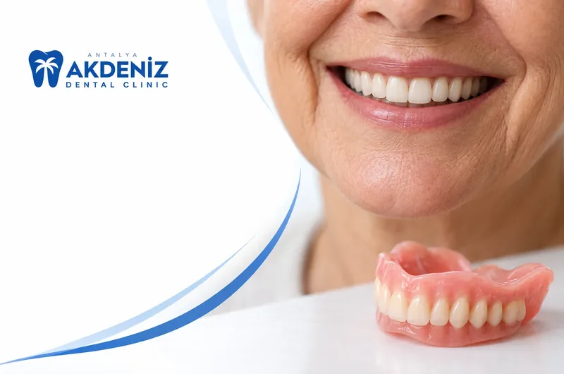

Dental Implants After DenturesAntalya, TurkeyYes. You can still have dental implants fitted in Antalya even after using dentures for many years. After being without teeth for a long time, some bone resorption occurs in the jawbones. For this reason, a bone graft may be required in some cases. During your online consultation with Akdeniz Dental Clinic, our dentist will discuss any additional procedures you might need. This will be confirmed after an examination and review of your scans.
Traditional dentures can slip whilst eating or speaking and are not a comfortable treatment option for everyone. There are two options to address the issue: a fixed bridge or a removable denture secured by implant abutments. Fixed bridges, such as All-on-4 and All-on-6, remain in your mouth. Removable implant-retained dentures, on the other hand, can be removed for cleaning. They are more stable than traditional dentures. In both options, a separate implant is not required for every missing tooth. The most suitable All-on-x treatment is recommended after assessing factors such as the condition of your bones and your bite.
What if there is not enough bone for dental implants in Antalya?
When using traditional dentures, bone volume continues to decrease. The longer you remain edentulous, the greater the bone loss; however, the rate of this loss varies from person to person.
During the consultation, your dentist will assess how much bone remains and determine its location. A 3D scan (CBCT) measures the existing bone and shows the position of nerves and sinuses. If there is not enough bone to hold an implant securely in place, a bone graft may be required.
All on 4 dental implants in Antalya can reduce the need for grafting. However, All on 4 also requires sufficient bone volume to secure the implants.
General health factors that may affect implant suitability
Your dentist needs your medical history and medication list before planning surgery. Poorly controlled diabetes affects healing, while smoking increases the risk of implant failure. These issues need attention before treatment begins.
Medicines used for osteoporosis or cancer also deserve particular care. Some affect bone healing and change the risks of implant surgery. Tell your dentist what you take and whether you have had radiotherapy involving the jaw. Do not stop prescribed medication yourself.
Any active gum disease around your remaining teeth needs treatment too. Implants require daily cleaning and regular dental checks, even when you have no natural teeth left.
Will I have teeth during the changeover?
A fixed temporary bridge is possible in suitable full-arch cases where the implants are sufficiently stable at placement. Otherwise, it may be advisable to allow the implants to heal before fitting the fixed teeth. It would not be right to comment on whether temporary teeth will be fitted without examining the case.
For UK patients travelling to Antalya, the first visit often covers surgery and temporary teeth. Final teeth are fitted later, after healing and checks. Confirm the return-visit schedule and follow-up arrangements before you travel.
Dental implants after dentures: FAQs
Can I have dental implants if I only wear a partial denture?
Yes. Implants can replace the missing teeth covered by your partial denture. Depending on the gaps, you could have individual implant crowns or an implant-supported bridge.
I was told years ago that I could not have implants. Is it worth asking again?
Yes. Start by finding out why implants were ruled out. If the reason was insufficient bone, a fresh assessment can show whether bone grafting or a different implant position offers a workable option.
Will I need implants in both jaws in Antalya?
No. You can have implants in one jaw and keep natural teeth. Your dentist checks both jaws to plan the bite, but each jaw has its own treatment needs. However, if you are a suitable candidate for treatment, you can have full-mouth dental implants fitted in Antalya.